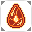

Hypersynergism wiki
Player guides for the maintained mod: what each feature does, where to find it, and its availability and limits.
 Installation & updates (6)
Installation & updates (6)- Interface & navigation (10)
- Header customization (20)
 Click-saving tools & input (4)
Click-saving tools & input (4) Corruption & challenge displays (7)
Corruption & challenge displays (7)- Hepteracts & Platonic upgrades (10)
 Golden Quarks & shop preferences (6)
Golden Quarks & shop preferences (6)
Ambrosia loadouts & income (8) Integrated Ambrosia Heater (15)
Integrated Ambrosia Heater (15) AutoSing & strategy editor (14)
AutoSing & strategy editor (14)- Save exports, backups & restore (7)
 Calculations, logs & framework (7)
Calculations, logs & framework (7)
Guides
Reference
- Every setting and saved preference
- Calculation picker reference
- Download the complete feature inventory (Markdown)
Help
Questions, bug reports and what to send with them: Help & bug reports, on the home page.